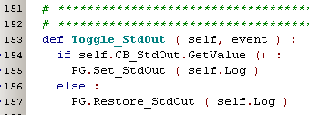

STD Redirection ( november 2008 )
Introduction
For redirection (and restore) of the stdout and stderr, there are functions located in PyLab_Works_Globals.
Both Set_... and Restore_... are called with the redirection object.
The procedures are fail safe, you may call Set_... more than once, before calling Restore_... more than once.
The redirection is stored as a link list.
A typical call to the redirection might look like this:
